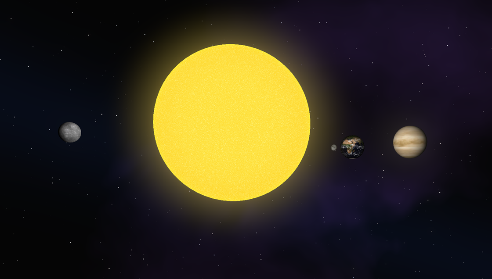

| Project Type: | Personal Project |
| Engine: | Unity 6 (6000.4.5f1) |
| Frameworks: | Unity DOTS — Entities, Burst, Jobs, URP 17.4 |
| Languages: | C#, HLSL |
| Role: | Sole Developer |
| Status: | In Development |

A real-time solar system simulation built in Unity 6 using the Data-Oriented Technology Stack (DOTS/ECS). The simulation models a star, all major planets, and a dense asteroid belt of 100,000+ bodies — each governed by Keplerian orbital mechanics and rendered with fully procedural shaders. No pre-baked textures: the sun, skybox, and planet surfaces are generated entirely in HLSL at runtime.
I designed and built every aspect of the project — ECS architecture, Kepler orbital solver, floating-origin precision system, all three procedural HLSL shaders (Sun, Skybox, Planet), and the GPU-instanced rendering pipeline. The project intentionally minimises runtime C# (87 lines across 2 files) while pushing complexity into the shader layer.
Orbital mechanics use a dominant-attractor gravity model — each body orbits exactly one parent — keeping simulation complexity O(N) and viable at asteroid-belt scale. Integration uses semi-implicit (symplectic) Euler for long-term orbit stability.
Positions are solved analytically each frame via a Kepler solver with Newton-Raphson iteration (8 steps) on the eccentric anomaly, then projected to world space. Units are physically grounded: 1 unit = 1 AU, 1 time unit = 1 day, mass stored as GM (gravitational parameter μ). Time is scaled ×10 for playback speed.
A floating-origin system rebases entity positions relative to the camera each frame, eliminating float32 precision loss at solar-system scales.
The simulation is built entirely on Unity's Baker pattern and Burst-compiled parallel jobs:
Baker<T> converts
MonoBehaviour components to IComponentData at subscene bake time — zero
runtime overhead from authoring data.ISystem +
IJobEntity, Burst-compiled and fully parallelised across all orbital
bodies each frame.IJobChunk +
ComponentLookup<T> for moon-to-planet parent lookups.EntityCommandBuffer
for deferred runtime entity creation.DynamicBuffer<T> per
entity, updated in jobs.NativeParallelMultiHashMap.An animated stellar surface driven entirely by procedural noise — no textures. Four layers of simplex noise at different scales (22, 77, 52, 272) are combined into a single "heat" value, which is mapped through a four-stop color ramp: dark core → orange → yellow → hot white.
Domain warping displaces the noise lookup before sampling, eliminating tiling artifacts. A configurable Fresnel term produces a glowing corona rim. DOTS instancing is enabled for per-entity color variation across GPU-instanced draw calls.
A fully procedural three-layer skybox rendered in a single fragment pass:
Planets receive light exclusively from the Sun via a custom forward-rendering shader. The light loop iterates URP's additional-light list, picks the dominant contribution per pixel, and applies per-pixel shadow attenuation — giving physically plausible day/night terminator lines with no baked lightmaps.
DOTS instancing allows per-entity color variation across the same GPU-instanced draw call. The shader runs 4 passes: UniversalForward, ShadowCaster, DepthOnly, and DepthNormals.